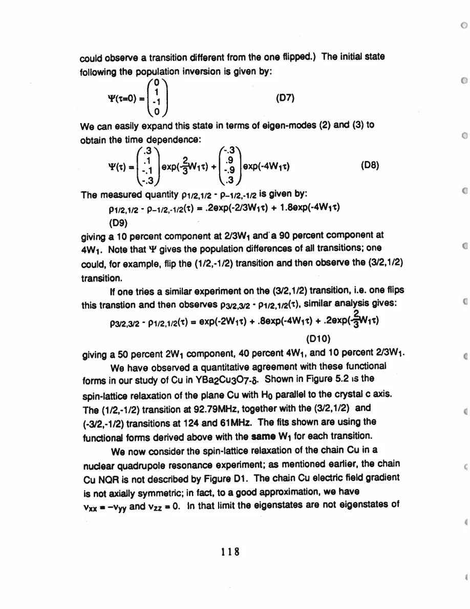
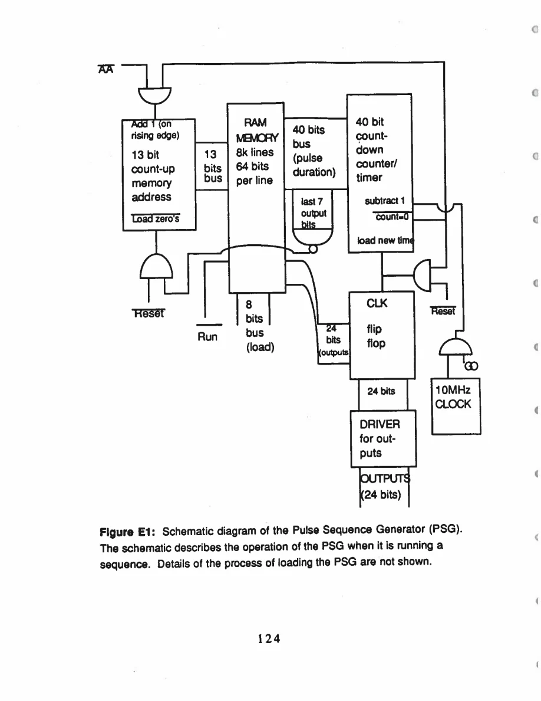
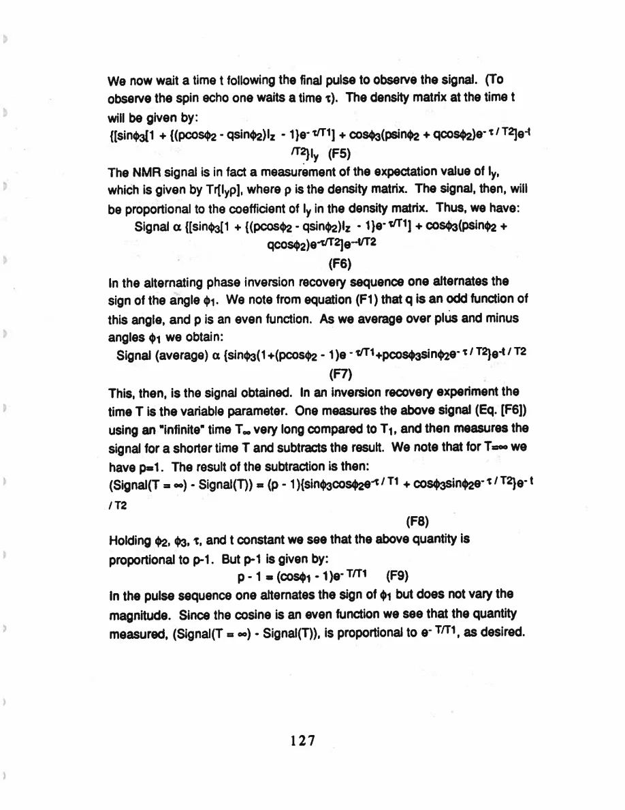

Pennington · supplied source 1989 · chapter unit
10. Appendix tools: spin Hamiltonian, recovery and pulse errors
The appendices connect raw signals to specific level, fluctuation and preparation models.
The question: Which assumptions underwrite the thesis’s concise rate and shift claims?
Before you start: the terms you need
- Plane Cu / chain Cu: the two crystallographic copper sites in YBCO
- EFG: electric field gradient, which couples to a nuclear quadrupole moment
- Magnetic shift: the field-proportional frequency change after quadrupole contributions are separated
- W₁: the thesis’s elementary satellite population-transition rate, not automatically 1/T₁
- Redfield contribution: echo decay generated by the fluctuating fields also responsible for population recovery
- Transferred hyperfine coupling: a nuclear spin senses electronic spins through orbital mixing or intervening atoms
See → explain → check
Follow the idea in 3 pictures.
Picture 1 / 3
Prepare before fitting
Look for: Choose the pulse excitation and observation together.
Swipe across the picture to read every label, or enlarge it below.
- Which transition inverted?
- Which population observed?
- Correct recovery weights
Teaching protocol map; multiple exponentials can be nuclear-mode structure.
Different preparations select different combinations of relaxation modes.
Check the original: PDF p. 129 · PDF p. 130
Picture 2 / 3
Resolve the field-noise directions
Look for: Transverse and longitudinal noise affect different observables.
Swipe across the picture to read every label, or enlarge it below.
- Transverse field noise
- Longitudinal field noise
In the source’s fast independent-field model.
Population recovery and coherence require distinct combinations of noise.
Check the original: PDF p. 125 · PDF p. 126
Picture 3 / 3
Reverse the inversion phase
Look for: Follow odd and even terms through averaging.
Swipe across the picture to read every label, or enlarge it below.
- Odd sinφ term
- Even cosφ term
Equal ±φ pulses and fixed readout; a schematic of symmetry, not an experimental trace.
Stimulated-echo transverse terms cancel while the population signal survives.
Check the original: PDF p. 137 · PDF p. 138 · PDF p. 139
Explain it back.
Try answering aloud before opening the explanation.
When does the orbital shift ratio become 4?
When the pertinent excitation energies are equal within the appendix’s single-hole model.
Why does phase reversal preserve the intended inversion?
Its longitudinal cosφ term is even while the unwanted transverse sinφ term is odd.
Can the Appendix F single-Bloch-time example replace Cu’s selective recovery expression?
No. Its purpose is artifact cancellation; the multilevel weights in Appendix D remain necessary for the Cu measurement.
Go deeper Follow the full argument
Hamiltonian and orbital response
Appendix A combines Zeeman and quadrupole terms in the spin 3/2 Hamiltonian for a field along an EFG principal axis. Its level diagram separates zero-, first- and second-order effects; in particular the central transition can acquire a second-order term proportional to the squared difference of transverse EFG components. Exact diagonalization is used for fitting rather than assuming this low-order expression is always sufficient. Appendix B explains why an x²−y² hole has no initial orbital circulation yet produces a paramagnetic chemical shift. The applied field mixes excited d states through angular-momentum matrix elements. The z-direction coupling has a matrix-element square four times larger than an in-plane one, but the final shift ratio also depends on excitation-energy denominators. A 4:1 ratio is therefore conditional on equal relevant energy gaps, rather than a symmetry-only measurement.
PDF p. 116 · PDF p. 117 · PDF p. 118 · PDF p. 119 · PDF p. 120 · PDF p. 121 · PDF p. 122
Redfield rates and preparation-dependent recovery
Appendix C uses a deviation density matrix in the rotating frame, not the full equilibrium density matrix. It evaluates transitions generated by independently fluctuating magnetic-field components with a specified exponential correlation function. In the fast-motion limit, the central population-transition rate is 4/3 times the satellite rate W₁, and coherence-decay rates include both population terms and longitudinal-field noise. Appendix D solves the population modes and demonstrates how an excitation determines their weights. Selective central inversion gives two exponential components, satellite inversion gives three, while nonselective inversion in unsplit Cu metal can excite one mode. Zero-field axial plane NQR is another case; the strongly nonaxial chain EFG requires different mixed eigenstates. These cases are why the guide preserves W₁ and the pulse protocol instead of substituting a universal 1/T₁. The final formulas are teaching tools with assumptions; this guide does not rederive every matrix element.
PDF p. 123 · PDF p. 124 · PDF p. 125 · PDF p. 126 · PDF p. 127 · PDF p. 128 · PDF p. 129 · PDF p. 130 · PDF p. 131 · PDF p. 132
Timing and phase are part of the physics
Appendix E documents a pulse-sequence generator with 24 digital outputs and 8192 instruction lines. A 10 MHz clock supplies 0.1 μs timing units, while finite switching sets a 0.2 μs minimum instruction. Greater sequence capacity permits full phase cycles and interleaved delay values without simplifying away their controls. Appendix F shows why alternating the sign of an imperfect inversion pulse cancels stimulated-echo contributions. Immediately after inversion, the unwanted transverse part is odd in the pulse angle, while the intended longitudinal population part is even. Averaging equal positive and negative angles removes the odd term. Holding readout pulses and echo timing fixed leaves a recovery dependence in the longitudinal part. This is an artifact-control argument; the appendix’s Bloch-style demonstration does not replace the earlier spin 3/2 selective multilevel recovery law. Reading the appendices makes the source’s apparent one-number rates into a transparent chain from preparation to signal to model.
PDF p. 133 · PDF p. 134 · PDF p. 135 · PDF p. 136 · PDF p. 137 · PDF p. 138 · PDF p. 139
Translate the mathematics Essential equations and their meaning
R_central modes:2 W₁/3 and 4 W₁; R_satellite also includes 2 W₁
Symbols: W₁: elementary satellite population-transition rate; R: deviation recovery
Rates and weights must be matched to pulse excitation; the spin 3/2 modes are not electronic-phase fractions.
K_orb,z/K_orb,x=4 E_yz/E_xy
Symbols: E: orbital excitation energies for an x²−y² ground hole; z: orbital symmetry direction
Equals 4 only for equal relevant excitation energies, under the appendix’s single-hole perturbative model.
ρ_after ∝ I_z cosφ + I_y sinφ
Symbols: φ: inversion angle with signed rotation axis; I: nuclear spin operators
Conceptual form in Appendix F: phase reversal cancels odd transverse terms without canceling even population preparation.
Read the evidence Guided original source pages

PDF p. 118

PDF p. 130

PDF p. 136

PDF p. 139
What the evidence supports—and where it stops
- No appendix algebra is presented as a fresh independent derivation.
- Correlation-time conventions and field-to-frequency units must be kept consistent.
- Historical hardware limits describe the supplied apparatus only.
Source version, reading coverage and preservation
All 146 scanned pages rendered and locally OCR-recognized with Windows.Media.Ocr. Research prose of PDF 13–139 read in full; source-specific formulas and selected complete page figures inspected individually. PDFpage=printedpage+12.
Reviewed body pages: 13, 14, 15, 16, 17, 18, 19, 20, 21, 22, 23, 24, 25, 26, 27, 28, 29, 30, 31, 32, 33, 34, 35, 36, 37, 38, 39, 40, 41, 42, 43, 44, 45, 46, 47, 48, 49, 50, 51, 52, 53, 54, 55, 56, 57, 58, 59, 60, 61, 62, 63, 64, 65, 66, 67, 68, 69, 70, 71, 72, 73, 74, 75, 76, 77, 78, 79, 80, 81, 82, 83, 84, 85, 86, 87, 88, 89, 90, 91, 92, 93, 94, 95, 96, 97, 98, 99, 100, 101, 102, 103, 104, 105, 106, 107, 108, 109, 110, 111, 112, 113, 114, 115, 116, 117, 118, 119, 120, 121, 122, 123, 124, 125, 126, 127, 128, 129, 130, 131, 132, 133, 134, 135, 136, 137, 138, 139. Acknowledgments and biography are not teaching material. Bibliography not independently verified against external publications. Mathematical derivations are summarized at final-result level; not every algebraic line independently reconstructed.
Source SHA-256: 85b6d3c8d20ccc23476bf72473860248d5228e16892afefa8dec6c7054d43c26. Original file bytes preserved locally, and in this room’s original download.
Thesis - Pennington - 1989 - Single crystal NMR of high temperature superconductors.pdf